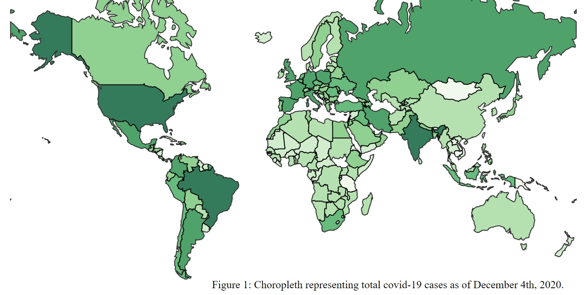
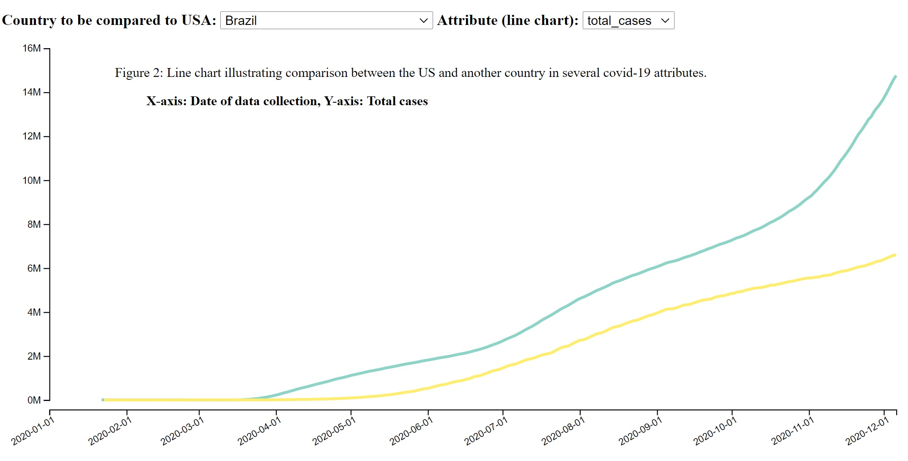
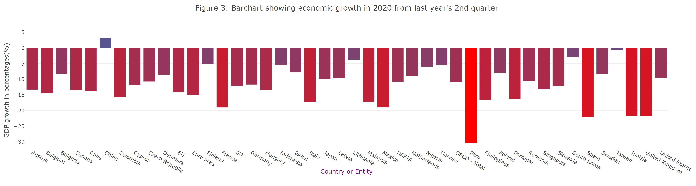

The main objective for the project is: how successful has the USA been in responding to the COVID-19 pandemic compared to other countries? As I previously discussed in part B of the project, this can be re-phrased as: how successful has the USA been in flattening the covid-19 pandemic curve compared to other countries? This is because the phrase "flattening the curve" can help us understand the objective better. This really does bring us back to the fact that, ultimately, if countries work together to bring the active numbers of covid-19 cases down to zero or "flatten" the curve, there will be no more outbreak. So, after putting a lot of thoughts into this, I decided that, instead of using some very specific and unique attributes like I considered doing earlier (e.g. number of tests that come back positive), I think that using generic attributes such as number of cases and deaths are the best measure of a country's response to the pandemic. Because, at the end of the day, the country that has managed to keep those numbers down is the closest to flattening the curve. Also, the impact on a country's economic output such as GDP due to the virus can also be considered an important aspect of our objective. Because, regardless of how much of the demographics suffered loss from the pandemic, the comparative resilience of a country's economic output can also indicate faster recovery from the pandemic than others. This also affects quality of life, jobs, affordability, better opportunities created faster for citizens post-pandemic etc. Thus, these contribute to a more robust government's pandemic response plan. So, based on my new observations and decisions, following given are the main goal and one subgoal that will help us break the objective down and come up with visualization designs.
Main goal (re-phrased): How successful has the USA been in flattening the covid-19 pandemic curve compared to other countries?
Sub-goal: To what extent has the covid-19 pandemic impacted the US economy compared to other major economies and entities of the world?
Materials: Please refer to the "Attributes" section above for the libraries that I have used for this project. The two datasets that I used for this project have been collected from Our World in Data (OWID) website. The main dataset is stored in a file called "owid-covid-data.csv". This dataset is updated every day with new numbers and contains data from all countries of the world on a range of attributes such as total cases, deaths, recoveries etc dating between first few weeks of the pandemic until today. I imported the file into my javascipt file directly linking to the web dataset. I have also stored a downloaded copy in "project/data/final/" if the marker needs to take a look at the file or in case the library fails to import the file from the web. The second file that I used in this project is called "project/data/final/economic-decline-in-the-second-quarter-of-2020.csv". This file contains economic data or more specifically the GDP growth of several major economies of countries and entities (e.g. G7, EU etc). This file has been downloaded from here.
Data wrangling: The two datasets I have used to produce the data visualizations for this project are mentioned in the "Materials" sub-section under "Problem description and objective" section above. I have used these two files to import all available covid-19 data for all the countries. I did not need to do any pre-processing on these files. I used them as they were. But, I have slightly modified the "project/data/final/world.geojson" file to make it more compatible with my program. I removed Antarctica and Greenland from the file and thus the world map, because I felt like their data aren't significant for this project and they were taking extra screen space. Also, I have renamed a few countries' names in the file, just to make them more consistent with our OWID covid-19 datasets. Such as, "USA" was renamed to "United States"; and "England to "United Kingdom" and so on. Now, most of the data wrangling that I have performed within the code has been done with standard javascript and d3 map and array methods. I have not used any library for this purpose. The OWID dataset is too big, so we have to filter accordingly before we can use it. Overall, including pre-processing and wrangling in code, I spent around two hours in understanding how I can integrate the huge dataset and other files within my project. Moreover, I did not pre-process and remove the un-used attributes, because I plan to extend this project in the future and I might use these data. I am also leaving the scope for representing other data in the same program I have because it has most things implemented and slight modification can take the project much farther.
What analysis: The following given is a Munzner-style what analysis of the datasets mentioned above in terms of the goal and sub-goal discussed for the project. Please note that I have analyzed only the attributes that are relevant to the project objectives and visualization designs. I have not discussed all the attributes as there are way too many and they do not really reflect the goal and subgoal as much, at least for now. But, good thing is, the way the program is designed, just slight tweaks can allow us to use many new attributes and thus extend this project much further potentially.
Why analysis: The following given is a Munzner-style why analysis or produced {action,target} pairs for the goal and subgoal mentioned above.
Design/Visualizations: For this project, I have implemented three co-ordinated visualization designs. So, I identify all three for marking purposes. The implementation of the co-ordinated visualization designs can be found here. For this report, I am going to provide screenshots of individual designs and describe each seperately.
Design 1:
Illustration:
Description and purpose: The first design illustrates a choropleth or colored map of the world. This map is drawn using the world.geojson file provided and d3 library functions. The purpose of this map is to show us the total number of covid-19 cases around the world with the color of a country map adjusted (between light and dark green) to its covid cases. The data is latest as of December 4th, 2020; because that is when the implementation was finalized. We can easily modify the program to represnt various other attributes on this map and change the date to a later date. Please note that if a country's color is grey it means that data isn't available for that country. I have implemented a tooltip to show a country's name and its current number of cases. To see that, we just need to hover our cursor over a country. Also, I have removed Antarctica and Greenland from the map as I discussed previously in the data wrangling section. For marking, I will re-state the purpose: to represent the total number of covid-19 cases using color adjusted to values. In terms of objectives previously discussed, this design is relevant to the main goal: how well the USA handled pandemic. It is relevant because it shows us the countries that have the most cases of the virus having darker green color. So the reader can quickly locate those countries visually. Higher concentration of cases means worsening circumstances for a country. For USA, we see that it has the highest cases worldwide. How does this map relate to the goal? By telling us that the US did not do the greatest job at keeping the numbers down.
How analysis:
Design 2:
Illustration:
Description and purpose: The second design demonstrates a line chart. This is implemented using d3 library functions. There are two dropdown menus implemented above the line chart. First one gives the user an option to select a country out of all countries of the world. The second one gives the user option to select one among four attributes: total covid cases, new cases, total deaths and new deaths. The default selections are "Brazil" and "total cases" for them respectively. The line chart shows two lines simultaneously. One line is of covid data of the US which is the default country and doesn't change. The other line is of Brazil's. But it can be changed by selecting a country from the dropdown. The y axis shows the attribute values and x axis shows the timeline which is basically almost the whole year of 2020. The change in the attribute dropdown is also co-ordinated so that when we select a new attribute, it selects the corresponding data for the US and selected country from the first dropdown. It also triggers change in the y axis' scale as different attributes have different scales and also it changes the label for y axis. I implemented a small tooltip as well which shows the corresponding country name close to (0,0) of the chart when we hover over one of the lines. Now, the purpose of the line chart is to show side-by-side comparison of covid data between the US and another country on several attributes. switching between the countries and attributes, we can see how the US compares to many other countries of the world in terms of these numbers. This is why the purpose of this chart is related to the main goal of our project. By making country to country comparisons, we can hypothesize on how well the US handled the pandemic.
How analysis:
Design 3:
Illustration:
Description and purpose: Lastly, the third design consists of a bar graph. It has been implemented using plotly.js library. This graph represents economic data for several countries and entities. It shows the growth in GDP, in percentages, in the second quarter(Q2) of 2020 compared to last year 2019's Q2. The bars are also colored according to the percentages ranging between a "coral red" and a "dark purple". The purpose of this graph is to compare between the US and several other major economies of the world in terms of how their economies performed pre-pandemic vs after the pandemic started. This design is used to address the sub-goal we discussed above which is about the economic output of the US compared to others. Looking at the bar graph and identifying potential outliers in the data can help us understand America's economic circumstances on a global scale.
How analysis:
Co-ordination: There exists co-ordination among all three of my designs. This has been accomplished using d3 dispatcher function calls. The key used to co-ordinate my views is the unique country code every country is assigned in my dataset. The clicking event on a country map on the choropleth triggers a "countrychange" call which causes the selection from the line chart's country selection dropdown menu to be changed accordingly. It also updates the second line plotted to the data for the selected country. The new country's data line on the chart is given a different fill color, so it is easier to distinguish from the previous selection. The selection of a new country from the dropdown menu also reflects on the choropleth by changing border color of selected country to red and changing its opacity and removing other countries' default black borders to highlight it out of all countries. Also, clicking on a country map or selection of a country from dropdown reflects on the bar graph too by highlighting the country bar in "cyan" color on it. Please note that there are many countries whose data is not available for the bar graph. So, many countries' selection on the map or dropdown won't trigger bar graph co-ordination. Lastly, all clicking event on map or selection from dropdown also outputs the selected country's data on the console, so that the user may take a look at filtered data for their country of interest without having to go through the whole huge dataset.
Sources: Please refer to the attributes section for more information regarding the sources of inspiration, libraries, design ideas etc.
Originality: The use of d3 transition() method is the portion of the project that I consider to be original. This has been applied to both the choropleth and line chart. When you click on a country or select a country from the dropdown menu, the border color of the country smoothly transitions into red and the opacity of the country's color on the map increases and the opacities of other countries decrease and this also happens through smooth transitions. Same thing happens with the line chart. When clicked on a country map or selection of a new one from dropdown, the new line with new data transitions smoothly from the previous line. Same goes for the y axis when you change the attribute being shown. The new scale is represented after a transition. I consider these examples original because transition methods are not part of the idioms' structures according to Munzner's slides.
Files and folders: The "project/" folder contains all required files and folders needed to run the project. The homepage for the project can be found at "project/final.html". This page contains the two links to the final project report and the implementation of design. The report is found here: "project/report.html" and the implementation is found here "project/implementation.html". The "views.js" contains all the required codes for the implementation of the designs. The "data/final/" folder contains the covid dataset (as a backup) and the economic dataset and the modified "world.geojson" file. The "data/final/figures/" contains all the figures screenshot from my implementation, which I used in the report for the purpose of illustration.
Access: The implementation of the co-ordinated designs can be found here: http://www.cs.mun.ca/~tasakib/csdatavis/project/implementation.html
Sources: Please refer to the "attributes" section and the "sources" sub-section under "design/visualizations" section for more information.
Outcome: Based on the goal and subgoal discussed above, I believe that the visualization choices have not been very successful at hypothesizing the US's success at handling the pandemic. Although, we can see that the views do tell us a lot about America's situation in terms of statistical data. For example, the choropleth shows that the US has the darkest saturation of all countries, so it quickly lets us summarize that the US has the highest number of cases in the world. For a country that has 4.25% of global population, has almost a fifth of global covid cases. This does not indicate a very good handling of the pandemic and the authorities could've done better at limiting the numbers. Same can be observed from the line chart. If we compare the multiple attributes of covid data between the US and other countries, we can see that in almost all combinations the US has beaten everyone across those sad numbers of cases and deaths. This also indicates that the pandemic wasn't handled as good as several other countries. Lastly, in contrast, the bar graph shows us a diifferent but more optimistic picture. We see that the US economy shrunk by 9.5% over a year, but some other developed countries such as Canada (-13.5%) and the UK (-21.6%) have done worse in terms of economic output. Although, in terms of covid cases and deaths, those countries handled the pandemic quite better than the US. This tells us that no matter how bad the situation gets with losses and sufferings of citizens, the US economy is more resilient and stronger than many other economies when it comes to post-pandemic recovery efforts. We can also see that China actually is the only country whose economy grew positively regardless of the fact that the outbreak started from there. This tells us that maybe they were much better equipped and prepared to handle a global pandemic than the US was. Overall, comparing the data, visualization designs, outcomes and the hypotheses I made here, I think that the designs were only partially successful at answering the very broad question. We can conclude that in terms of numbers of cases and deaths, the US has handled the pandemic rather poorly with poor preparedness, but the economic data is promising and indicates a potentially better recovery response than others.
Suggestions: The design ideas were limited in that the attributes are very generic and the same design ideas are widespread on the web for this type of data. There aren't many things that are unique or interesting about the designs. But, given more time; and circumstances are less stressful with univesity and life overall; I could improve this project a lot. I would introduce less generic attributes and try to find interesting patterns and hypotheses. For example, I could focus on test data like I mentioned in part B of the project. Also, I could use less common but interesting design ideas such as circular barplot co-ordinated with a stacked area chart to show new covid data. Also, my existing designs can still be improved and presented. I could add a button to add a selected country's data to the line chart from the dropdown menu or the map, along with two or more already plotted lines. This would make it easier for the user to compare US data with many at the same time. I could also add a dropdown menu to the choropleth to represent other attributes on it such as deaths, icu admissions etc.
Reflection: In my opinion, the Munzner's what-why-how framework was extremely helpful at making design choices for the datasets. Using what analysis, I could categorize different attributes and research based on those categories to come up with design ideas that are more relevant for certain attributes than others. Moreover, the why analysis helped me understand my goal and sub-goal better. For example, by picking out "outlier" for the analyze level of the analysis, it gave me a new perspective of how I can compare US data with an outlier and hypothesize its position. Finally, the how analysis helped me so much by allowing me to use the ranks of channels in terms of effectiveness and let me choose the best possible way to present data to the user. Overall, I will definitely consider this framework in the future projects whereever I will need to generate visuals.
Note for marker: This is regarding my re-submission for the part A of my submissions. I have used choropleth again for my final submission just like I used in part A. But I lost some marks on my part A submission. Based on the feedbacks and marking keys (loss on: FKMP) I received, I made some changes to address those issues, in hope for improving my grade for part A. Marker mentioned that: "Visualization ideas are insufficient. Only looking a specific date does not address to the broad question, it partially does." I have addressed this by adding data from the whole OWID dataset to show on my line chart. The marker also mentioned "colour scale should be wider". I have fixed that as well. Moreover, my part A's choropleth wasn't loading properly unless page is refreshed. I suspect this is why I lost marks under key "P". I fixed that so now it loads properly at initial run. Also, I used more than one visuals, so this should address my mark loss in key "F", though I believe we were only supposed to provide one at that time. Furthermore, I improved my design and widened the colorscale which should address my loss in key "M". Lastly, to my knowledge, "Originality" was not part of marking of part A at that time. But I lost marks on that from key "K" based on that. I would highly appreciate if you could take a look at all these and improve my part A mark if possible. Thank you very much.